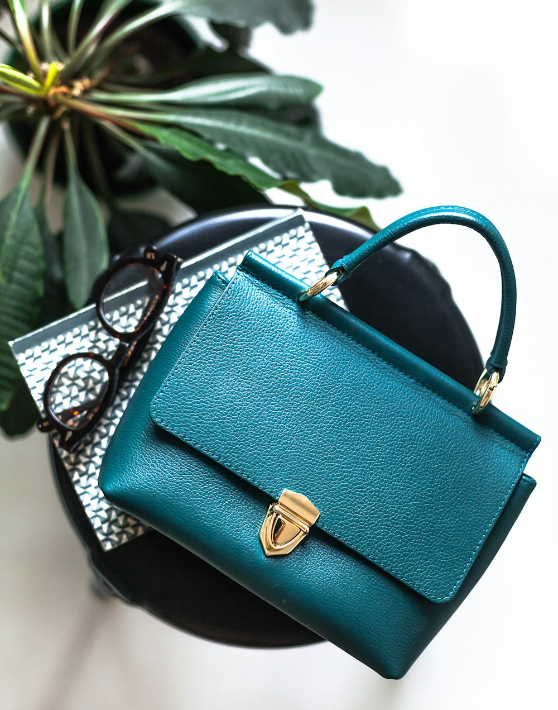

Preservation & Care

1. The Living Nature of Vegetable-Tanned Leather
Fine full-grain vegetable-tanned leather is not an inert synthetic textile; it is an active organic biological matrix comprised of interwoven collagen protein bundles, natural botanical tannins, and moisture channels. When cared for with knowledgeable reverence, it possesses an extraordinary capacity for self-healing and indefinite longevity.
Conversely, neglecting basic maintenance or exposing organic hides to improper chemical solvents can dehydrate collagen fibers, leading to stiffness, fiber cracking, and irreversible structural damage.
This comprehensive preservation guide outlines the authoritative seasonal rituals, conditioning formulas, and storage protocols practiced by the conservators at the Sable & Crest Parisian atelier.
2. The Three Primary Enemies of Organic Leather
Understanding leather preservation requires identifying the three primary environmental factors that degrade collagen structures over time:
- 1. Extreme Thermal Dehydration: Storing leather near radiators, heating ducts, or in direct hot summer sunlight in parked vehicles bakes out natural oils, causing the microscopic collagen fibers to contract, become brittle, and crack.
- 2. Excessive Ambient Humidity (>70% RH): Damp, unventilated closets encourage mold and mildew spores to feed on natural tree-bark tannins, producing foul odors and surface staining.
- 3. Petroleum & Silicone Chemical Sprays: Commercial aerosol "waterproofing" sprays contain silicone resins and petroleum distillates that clog the natural epidermal pores of full-grain leather, suffocating the material and preventing the development of natural patina.
3. The Four Seasonal Care Rituals
We recommend establishing a gentle, rhythmic care regimen aligned with the changing seasons:
| Ritual Stage | Frequency | Recommended Agent / Tool | Operational Procedure |
|---|---|---|---|
| Surface Dusting | Weekly | 100% Natural Horsehair Brush | Gentle circular strokes along stitch lines and seams to dislodge abrasive grit. |
| Hydration & Nourishment | Bi-Annually (Spring & Autumn) | Organic Beeswax & Jojoba Oil Balm | Apply a hazelnut-sized amount with cotton cloth; allow 4 hours to absorb; buff. |
| Hardware Re-Luster | Annually | Microfiber Jewelry Polishing Cloth | Gently wipe 24k gold and bronze crest hardware to remove finger oils and dust. |
| Atelier Spa Refresh | Every 3 to 5 Years | Sable & Crest Master Workshop | Complimentary complete edge re-lacquering, deep conditioning, and seam check. |
4. Rain & Moisture Emergency Protocol
A sudden downpour is one of the most common anxieties for luxury bag collectors. If your vegetable-tanned tote is caught in heavy rain, follow the Sable Emergency Moisture Protocol:
- Do NOT Panic and Do NOT Rub: Rubbing wet leather with aggressive pressure can abrade the soft, water-swollen epidermal grain.
- Blot Gently with Clean Cotton: Use a dry, lint-free white cotton towel to blot standing water droplets from the surface.
- Stuff with Acid-Free Tissue Paper: Lightly pack the interior with dry, unprinted acid-free tissue paper or unbleached cotton cloths to absorb internal moisture and maintain the tote's upright silhouette.
- Air-Dry Slowly at Room Temperature: Place the bag in a well-ventilated, shaded room away from all direct heat sources (radiators, hairdryers, or sunlight). Allow 24 to 48 hours for moisture to evaporate naturally.
- Post-Drying Conditioning: Once completely dry, apply a light coat of organic leather balm to restore any natural surface lipids displaced by the rain.
5. Archival Storage and Travel Protection
When your tote is not actively accompanying you on journeys, proper resting storage ensures it maintains its pristine form:
- Always store the tote in its supplied breathable, unbleached organic cotton dust bag. Never store fine leather in sealed plastic bags or airtight vinyl containers, which trap humidity and invite mold growth.
- Maintain light internal stuffing to preserve gusset structure and prevent permanent creasing.
- Store in a climate-controlled wardrobe with relative humidity maintained between 45% and 55% at temperatures between 18°C and 22°C (65°F to 72°F).
- Ensure the tote rests flat on its bronze base studs, with shoulder straps resting gently draped over the top rather than twisted underneath the base.
6. Conclusion: A Pact with Longevity
Caring for a mastercrafted leather tote is not an onerous chore; it is an intimate, mindful ritual that deepens your relationship with a companion object. Each time you buff the warm leather and feel its supple, aromatic grain respond under your hands, you reaffirm a commitment to enduring beauty and timeless craftsmanship.